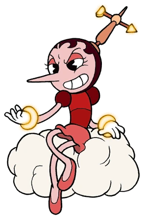

- Хильда Бёрг
- Рибби и Крокс
- Банда корнеплодов
Хильда Бёрг
 Один босс и целых шесть фаз, однако первая, третья и пятая фаза являются промежуточными и не представляют серьёзной опасности для игрока. Босс представляет из себя девушку, превращающуюся сначала в подобие дирижабля, затем в один из 3 знаков зодиака (Телец, Близнецы, Стрелец). Также босс является первым воздушным боссом в игре и одним из самых лёгких.
Один босс и целых шесть фаз, однако первая, третья и пятая фаза являются промежуточными и не представляют серьёзной опасности для игрока. Босс представляет из себя девушку, превращающуюся сначала в подобие дирижабля, затем в один из 3 знаков зодиака (Телец, Близнецы, Стрелец). Также босс является первым воздушным боссом в игре и одним из самых лёгких.
Внешний вид
 Представляет из себя человекоподобное существо женского пола с бледно-розовой кожей, одетое в красную футболку с шарообразными рукавами и розовую мини-юбку с розовыми туфлями. На руки надеты белые перчатки со светящимися жёлтыми обручами. Лицо состоит из пары крупных глаз с тонкими бровями и розовыми веками, небольшого рта и длинного остроконечного носа, на голову под каштановые волосы также надет аненометр. В бою её тело трансформируется в дирижабль, в задней части которого появляется пропеллер, причём она ногами начинает крутить педали моноцикла.